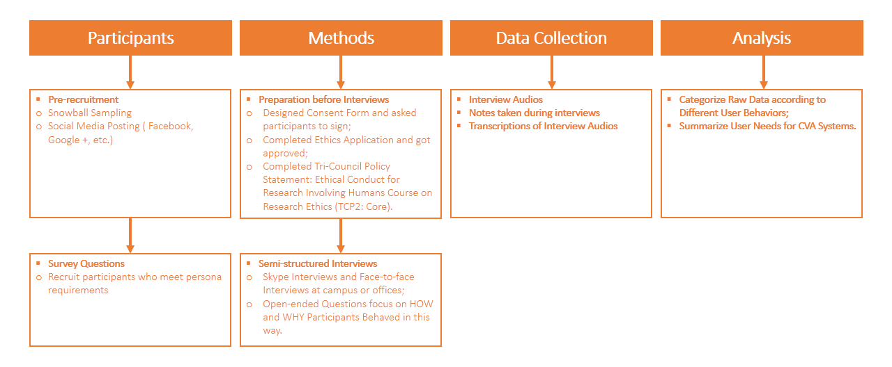
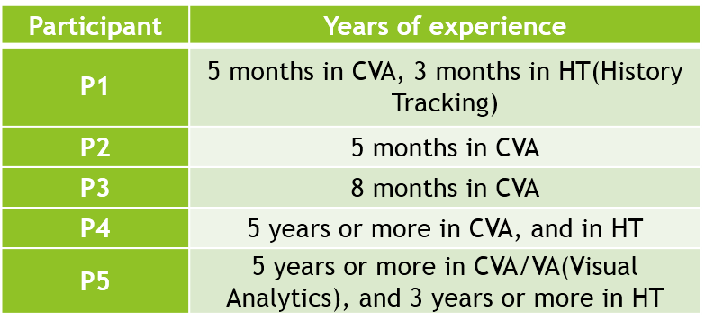
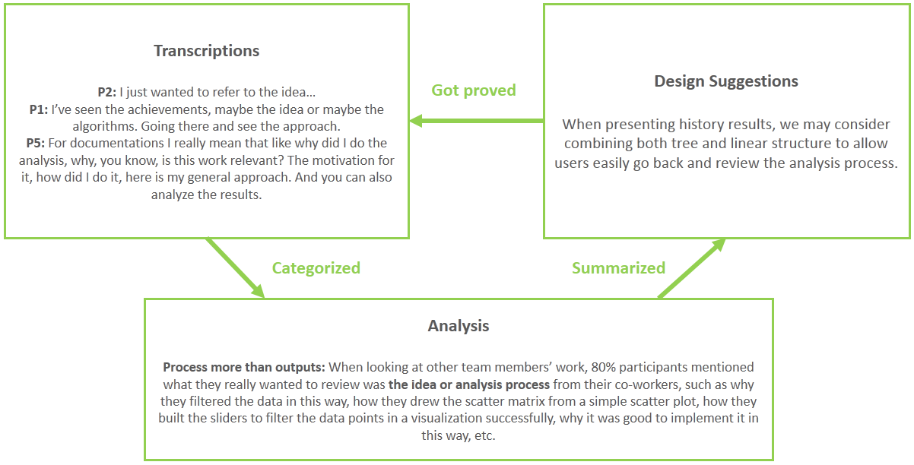

Business data analysis is unlikely to be achieved by one single person due to its complexity. Several collaborative visual analytics (CVA) systems based on web technology appeared and added social interactions including communicating, annotating, and sharing into visual analytics. However, there are still other forms of interactions such as history tracking, aiming at reviewing or reusing others’ previous work which can contribute to one’s current analysis. Little is known about what and how we keep as history and how to represent history. The paper conducted a study into users’ experiences of using Jupyter Notebook – a web application which can be used for asynchronous collaborative visual analytics. The analyzed interview results would help to understand the role of history tracking in collaboration, and inspire us for future design of distributed asynchronous CVA systems.
Before we start to develop a web-based asychronously collaborative visual analytics application, we need to understand users' real needs of different forms of human interactions with the application, what they normally do, how they do it, and why they do it when reviewing or reusing others' work in collaborative situations. I came up with the following Research Questions (RQs)
RQ1: Do analysts track history when analyzing the data? In which ways? RQ2: Which kind of the history analysts found valuable to be tracked? RQ3: How important they felt to review or reuse others’ work?
Users who are going to use the CVA application will be data analysts and visual analytics specialists.
I designed a user experience research using qualitative study method. Detailed process is shown in the chart below.
Q1: Could you tell me a story about a memorable experience that you reviewed the work from anyone else in the team? Q2: When you were reviewing the previous results, what kind of analysis history you looked at? Why and how did you look at it?
Due to the limitation of time and resources for a course project, I only recruited 5 participants, but I balanced the participants by letting them have different levels of knowledge and experience in visual analytics area according to the survey questions. I labeled all participants and their info as below.
After analyzing the transcriptions of interview audios, I summarized and categorized results in several aspects. Sample transcriptions, results and design suggestions are shown as below.
Firstly, according to the answers in survey questions, all participants reported they once used Jupyter Notebook as their collaborative visual analytics tool in their previous projects, so most of the results were about the use cases on Jupyter. In the future, I should investigate more CVA tools for more general conclusions.Secondly, during the time when the study was conducted, all participants were not in the middle of any collaborative visual analytics projects, I didn't have the chance to observe users' behaviours when they collaborated on the work. In the future, I should add observation into research method.